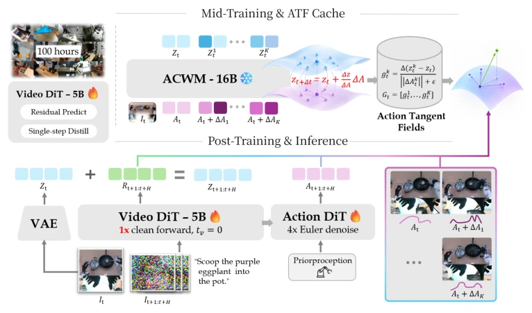
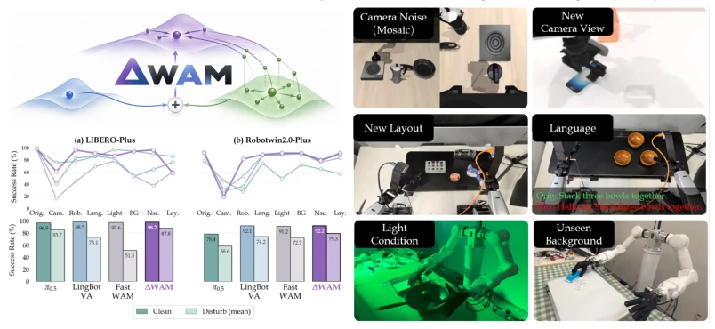
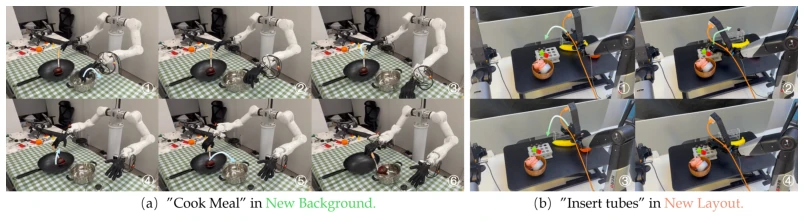

This paper delivers a reality check to WAM: do not just focus on the background; actions are what matter. ΔWAM attempts to transform the world model into an action-sensitive model via residual space and tangent field distillation, forcing the model to focus on dynamic changes triggered by actions. Although it achieved a total success rate of 87.8% on LIBERO-Plus, significantly outperforming Fast-WAM, it still falters when facing large viewpoint or drastic layout changes. This strategy of local perturbation is quite clever, but essentially relies on ACWM as the teacher; if the teacher itself does not understand physics, the student yields little benefit. Furthermore, although inference is fast, it relies on the pre-trained Wan model, raising the question of whether it simply piggybacks on the capabilities of large models. In summary, there is indeed progress in out-of-distribution robustness, but the fundamental geometric reasoning problem remains unsolved.
研究动机Motivation
现有 WAM 如 Fast-WAM (Yuan et al., 2026) 或 GE-Act (Liao et al., 2025) 常陷入预测陷阱，模型为了降低 Loss 倾向于复制静态背景和光照，而非学习动作后果。光流或运动中心目标虽减少了静态信息，但丢弃了接触操作所需的视觉线索，且无法揭示未来动态中哪些方向对动作敏感。论文指出，世界监督的效率取决于未来中动作相关变异的占比，而非覆盖范围。因此需要一种机制，在保留信息丰富的目标同时，聚焦于动作诱导的动态方向。
Existing WAMs such as Fast-WAM (Yuan et al., 2026) or GE-Act (Liao et al., 2025) often fall into prediction traps; models tend to copy static backgrounds and lighting to reduce Loss rather than learning action consequences. Although optical flow or motion-centric objectives reduce static information, they discard visual cues required for contact operations and cannot reveal which directions in future dynamics are sensitive to actions. The paper points out that the efficiency of world supervision depends on the proportion of action-related variance in the future, not the coverage range. Therefore, a mechanism is needed to focus on action-induced dynamic directions while retaining information-rich targets.
方法Method
整体流程分三步：1. 残差 VAE 中训：将预训练 Wan VideoDiT (Wan Team et al., 2025) 适配为预测当前帧与未来帧的残差 Latent，利用广播机制对齐形状，确保无信息丢失但聚焦变化。2. 动作切线场 (ATF) 提取：利用动作条件世界模型 (ACWM, NVIDIA Cosmos Team, 2026) 对专家动作施加微小扰动，计算残差未来的差异，正交化得到局部动作敏感方向基，相当于估计了动作到动态的一阶 Jacobian。3. 各向异性后训练：在 Fast-WAM 策略上，除常规残差 Loss 外，额外增加对 ATF 方向误差的加权惩罚，使监督聚焦于动作相关动态，而非静态外观。推理时仅需一次 VideoDiT 前向即可获取世界特征，无需生成视频，效率极高，且缓存了 ATF 基，避免了推理时的额外计算开销。
The overall process is divided into three steps: 1. Residual VAE Training: Adapt the pre-trained Wan VideoDiT (Wan Team et al., 2025) to predict the residual Latent between current and future frames, utilizing a broadcast mechanism to align shapes, ensuring no information loss but focusing on changes. 2. Action Tangent Field (ATF) Extraction: Utilize the Action-Conditional World Model (ACWM, NVIDIA Cosmos Team, 2026) to apply small perturbations to expert actions, calculate differences in residual futures, and orthogonalize to obtain local action-sensitive direction bases, equivalent to estimating the first-order Jacobian from action to dynamics. 3. Anisotropic Post-Training: On the Fast-WAM policy, in addition to the conventional residual Loss, additionally add a weighted penalty on ATF direction error, making supervision focus on action-related dynamics rather than static appearance. During inference, only one VideoDiT forward pass is needed to obtain world features, no video generation required, extremely efficient, and the ATF basis is cached, avoiding extra computational overhead during inference.

Figure 2: Overview of ∆WAM. A Wan VideoDiT-5B is mid-trained to predict the Residual-VAE future Rt+1:t+H. An embodiment-specific ACWM is then queried at K perturbed actions, and its normalized response differences are orthonormalized into a cached basis Gt of locally action- sensitive directions. Post-training keeps the real residual as the target and penalizes its projection onto Gt, one VideoDiT pass at tv = 0 conditions four ActionDiT Euler steps at inference.
Tested on LIBERO-Plus, RoboTwin, and real robots NERO/Tianji. LIBERO-Plus total success rate reaches 87.8%, superior to Fast-WAM (51.5%) and π0.5 (85.7%), with significant improvement especially under robot initialization and language perturbations. In real tasks, ΔWAM significantly leads under complex contact and two-finger operations, with NERO test tube insertion average score 0.79. Ablation shows that when perturbation number K=8, the effect is best, and 1 inference step is sufficient to maintain performance. However, experiments also expose shortcomings: performance drops significantly under camera viewpoint and layout changes; LIBERO-Plus layout perturbation is only 58.4%, indicating that the local tangent field struggles to cover global geometric reasoning needs, and generalization to large-scale scene changes remains limited.

Figure 1: ∆WAM under distribution shift. Left: success rate by perturbation type on LIBERO- Plus and RoboTwin 2.0-Plus, with the average over perturbations shown for each method. Right: the corresponding shifts, camera noise, novel viewpoints and layouts, language, lighting, and unseen backgrounds.

Figure 3: Real-world rollouts across embodiments. Left: Tianji performs bimanual cooking with dexterous hands under a new background. Right: NERO inserts test tubes with a parallel gripper under new objects layout, numbered frames show the progression of each task.